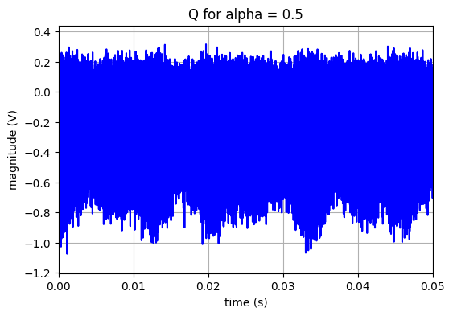
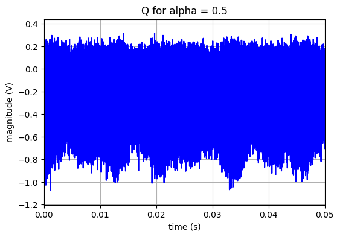

Taritement du signal LOC reçu par l’avion
Franck Daout
septembre 2023
%pylab
%matplotlib inline
Using matplotlib backend: <object object at 0x7f38deb472d0>
%pylab is deprecated, use %matplotlib inline and import the required libraries.
Populating the interactive namespace from numpy and matplotlib
Traitement du signal LOC
La première étape consiste à importer les données “LOC” sauvegardées à la leçon précédente. Ces données représentent le signal reçu par l’avion.
# Load the LOC data
#parameter
file_name = '../_static/data/loc_data.txt'
alpha_s = 0.5
fc = 10e3
with open(file_name, 'r') as f:
f_list = f.readlines()
t = zeros(len(f_list))
Vr_rfb = zeros(len(f_list))
for i in range(len(f_list)):
t[i] = float(f_list[i].split(',')[0])
Vr_rfb[i] = float(f_list[i].split(',')[1])
figure(figsize=(6,4))
plot(t,Vr_rfb,'b')
grid()
xlabel('time (s)')
ylabel('magnitude (V)')
title('RF signal after propagation with noise for alpha = '+str(alpha_s))
xlim(0,0.05)
show()
sample_rate = 1./(t[1]-t[0])
Méthode
Les traitements nécessaires se décomposent en deux étapes principales :
Démodulation IQ du signal reçu pour retrouver le signal en bande de base.
Traitement du signal en bande de base afin de déterminer la position de l’avion.
Présentation générale du traitement du signal “LOC”
La structure d’un récepteur ILS est présentée sur la Fig. 10.
{kind=link}
Fig. 10 Schéma fonctionnel du récepteur du système ILS - extrait de “Influence of Aircraft Power Electronics Processing on Backup VHF Radio Systems”
La Fig. 10 illustre un récepteur ILS. Deux antennes dipôles, l’une pour le canal “LOC” et l’autre pour le canal “GP” (Glide sloPe”), reçoivent les signaux ILS. Après le traitement RF et IF et la démodulation, le signal est filtré pour déterminer l’amplitude des signaux de navigation de 90 et 150 Hz. Puis la position de l’avion, via le paramètre \(\alpha\) est calculée :
avec \(V_{rms90}\), la valeur efficace du signal à la sortie du filtre passe-bande 90Hz et \(V_{rms150}\), la tension efficace à la sortie du filtre passe-bande 150Hz.
Dans la suite, nous allons nous intéresser au signal LOC et décrire les traitements numériques nécessaires pour obtenir la valeur de \(\alpha\). Cette démarche s’inspire de la Fig. 10.
Signal en bande de base
Au niveau du récepteur, à la réception, le signal \(Vr{RF}(t)\) est d’abord multiplié par une sinusoïde et un cosinus pour obtenir les composantes en bande de base I et Q :
Le module permettant RF de réaliser ce calcul est appelé “mélangeur” (mixer) et plus précisément mélangeur IQ.
L’opération ci-dessus permet de translater le signal autour de “0Hz”, mais aussi autour de la fréquence \(2f_c\). Cette composante fréquentielle est supprimée par un filtre passe-bas.
Nous pouvons maintenant combiner les composantes I et Q pour obtenir un signal complexe en bande de base :
avec \(I_f\) et \(Q_f\) les signaux \(I\) et \(Q\) filtrés (i.e. les signaux en bande de base).
La figure ci-dessous présente les signaux I et Q non filtrés.
# Baseband signal (I,Q)
I = Vr_rfb*cos(2*pi*fc*t)
Q = -Vr_rfb*sin(2*pi*fc*t)
figure(figsize=(6,4))
plot(t,I,'b')
grid()
xlabel('time (s)')
ylabel('magnitude (V)')
title('I for alpha = '+str(alpha_s))
xlim(0,0.05)
figure(figsize=(6,4))
plot(t,Q,'b')
grid()
xlabel('time (s)')
ylabel('magnitude (V)')
title('Q for alpha = '+str(alpha_s))
xlim(0,0.05)
show()
 

Il convient de s’arrêter sur la nécessité d’utiliser un mélangeur IQ et pas seulement une simple multiplication.
Tip
Pourquoi une démodulation IQ! 💬
En première approximation, le signal reçu est le signal émis atténué et retardé :
L’angle \(\phi\) est lié au retard \(t_d\).
En notant \(A(t) = \beta A_{RF} (1 + m V_{base}(t-t_d))\), le signal reçu s’exprime plus simplement : \(Vr_{RF}(t) = A(t) \cos( 2 \pi f_c t + \phi)\).
Considérons maintenant le cas ou l’on démodule de façon cohérente, c’est à dire que l’on multiplie seulement le signal reçu par \(\cos( 2 \pi f_c t)\), dans ce cas, on obtient :
En conservant que la composante basse fréquence, on obtient :
Dans le cas ou l’angle \(\phi = (2n+1) \frac{\pi}{2}\) (i.e une valeur impaire de \(\frac{\pi}{2}\)), la tension \(Vr(t)\) est nulle et la démodulation n’est plus possible. Notons que la valeur de l’angle \(\phi\) est généralement indéterminée. Il faut donc pouvoir traiter le signal quelle que soit la valeur de l’angle \(\phi\).
La réponse à cette question est l’utilisation de la démodulation IQ. Dans ce cas :
La valeur de \(A(t)\) est retrouvée à partir de \(2 \sqrt{I_{f}^{2}+Q_{f}^{2}}\) et ne dépend plus de \(\phi\). Dans ce cas la démodulation est possible quelle que soit la valeur de \(\phi\).
Les signaux I et Q ont deux composantes: le signal en bande de base mais aussi une image du signal modulant translaté autour de la fréquence \(2f_c\). Il convient donc de supprimer cette composante pour ne conserver que le signal en bande de base.
Cette opération est réalisée avec un filtre passe-bas. Pour notre application nous avons choisi une fréquence de coupure à -3dB de 1KHz. Le gabarit de ce filtre est présenté sur la figure ci-dessous.
from scipy.signal import firwin
cutoff = 1e3 # arbitrary design parameters
lowpass_order = 51
lowpass_delay = (lowpass_order // 2)/sample_rate # a lowpass of order N delays the signal by N/2 samples (see plot)
# design the filter
lowpass = firwin(lowpass_order, cutoff/(sample_rate/2))
# calculate frequency response of filter
t_lp = arange(len(lowpass))/sample_rate
f_lp = linspace(-sample_rate/2, sample_rate/2, 2048, endpoint=False)
H = fft.fftshift(fft.fft(lowpass, 2048))
figure(figsize=(6,4))
plot(f_lp/1e3, 20*log10(abs(H)))
xlabel('frequency (KHz)')
ylabel('magnitude (dB)')
xlim(0,15)
grid()
title('Image rejection filter')
show()
Les signaux I et Q filtrés sont représentés sur la figure ci-dessous. L’enveloppe du signal est bien retrouvée.
# Image rejection filter
from scipy.signal import lfilter
If = lfilter(lowpass, 1, I)
Qf = lfilter(lowpass, 1, Q)
figure(figsize=(6,4))
plot(t,If,'b',label='If')
plot(t,Qf,'r',label='Qf')
grid()
legend()
xlabel('time (s)')
ylabel('magnitude (V)')
title('If for alpha = '+str(alpha_s))
xlim(0,0.05)
show()
Vif = If + 1j*Qf
Démodulation du signal
À cette étape, les signaux \(If\) et\(Qf\) peuvent s’exprimer comme :
avec l’angle \(\phi\) qui est lié à la propagation (mais aussi pratiquement à la différence de phase entre les oscillateurs RF de l’émetteur et du récepteur).
Rappelons que nous cherchons à reconstituer \(V_{base}\). Pour cela, il convient de combiner les signaux \(I_f\) et \(Q_f\) ainsi :
L’information \(V_{base}\) est retrouvée en supprimant la composante continue de la variable K :
avec l’opérateur \(<.>\) qui correspond à la moyenne temporelle et \(\tilde{V}_{base}\) le signal modulant reconstruit sans mise à l’échelle.
Le programme suivant présente ces opérations.
# AM demodulation
Vif_d = abs(Vif) - mean(abs(Vif))
figure(figsize=(6,4))
plot(t,Vif_d,'r')
grid()
xlabel('time (s)')
ylabel('magnitude (V)')
title('Vif_d for alpha = '+str(alpha_s))
xlim(0.005,0.05)
ylim(-0.2,0.2)
show()
Traitement du signal démodulé
Afin d’identifier les signaux “90Hz” et “150Hz”, le signal reçu est filtré par deux filtres passe bande de fréquence centrale 90HZ et 150Hz. La valeur RMS de la sortie de chaque filtre est calculée et comparée pour indiquer au pilote le désaxement de l’avion.
Mais auparavant nous allons réduire la fréquence d’échantillonnage d’un facteur 100 ce qui entraîne une nouvelle fréquence d’échantillonnage de 1KHz (\(f_s\)), ce qui nous permet de représenter une forme d’onde dont la fréquence maximale est de 500Hz.
Pour cela nous allons effectuer deux opérations :
Filtré le signal avec un filtre passe-bas de fréquence de coupure de 500Hz. Cela diminue la puissance de bruit et évite les phénomènes de repliement.
Décimer le signal, c’est à dire ne conserver qu’un point sur 100.
Pour réaliser ces deux étapes nous allons utiliser l’instruction python decimate qui réalise le filtrage et la décimation. Pour diminuer les contraintes sur les filtres, nous allons utiliser deux étages pour réaliser cette opération.
La figure ci-dessous présente le signal avant et après décimation.
# Decimate the IF signal
from scipy.signal import decimate
#Decimation is performed in two stages to reduce the order of the anti-aliasing filter
decima = 100
pro = decimate(Vif_d,10)
Vloc = decimate(pro,10)
tloc = t[::decima]
fs = sample_rate/decima
figure(figsize=(6,4))
plot(t,Vif_d,'r',label='Without decimation')
plot(tloc,Vloc,'+b',label='With decimation')
grid()
xlabel('time (s)')
ylabel('magnitude (V)')
title('Vloc for alpha = '+str(alpha_s))
legend()
xlim(0.01,0.06)
ylim(-0.2,0.2)
show()
Le signal est ensuite filtré par deux filtre passe bande.
La figure suivante présente le gabarit du filtre passe-bande 90Hz pour différents ordres. Pour cette application, nous avons choisi un filtre d’ordre 3.
# Basse-band filter 90Hz
from scipy.signal import butter, lfilter, freqz
def butter_bandpass(lowcut, highcut, fs, order=5):
return butter(order, [lowcut, highcut], fs=fs, btype='band')
def butter_bandpass_filter(data, lowcut, highcut, fs, order=5):
b, a = butter_bandpass(lowcut, highcut, fs, order=order)
y = lfilter(b, a, data)
return y
# Sample rate and desired cutoff frequencies (in Hz).
lowcut = 85.0
highcut = 95.0
# Plot the frequency response for a few different orders.
figure(figsize=(6,4))
for order in range(5):
b, a = butter_bandpass(lowcut, highcut, fs, order=order)
w, h = freqz(b, a, fs=fs, worN=2000)
plot(w, abs(h), label="order = %d" % order)
plot([0, 0.5 * fs], [sqrt(0.5), sqrt(0.5)],
'--', label='sqrt(0.5)')
xlim(0,250)
xlabel('Frequency (Hz)')
ylabel('Gain')
grid()
legend(loc='best')
show()
Le signal décimé est ensuite filtré par les deux filtres passe-bande, et la valeur efficace de chaque signal filtré est ensuite calculée.
À partir de cette valeur efficace, la valeur de \(\alpha\) estimé est calculée et comparée à la valeur exacte.
v90 = butter_bandpass_filter(Vloc, 85.0, 95.0, fs, order=3)
rms90 = sqrt(mean(v90**2))
v150 = butter_bandpass_filter(Vloc, 140, 160, fs, order=3)
rms150 = sqrt(mean(v150**2))
K = rms90/rms150
alpha_est = K/(1.+K)
print(f'Amplitude des tensions V90 = {rms90*sqrt(2):3.2e}V et V150 = {rms150*sqrt(2):3.2e}V')
print(f'Valeur de alpha exacte: {alpha_s:3.2f} et valeur de alpha estimée : {alpha_est:3.2f}')
Amplitude des tensions V90 = 4.66e-02V et V150 = 4.74e-02V
Valeur de alpha exacte: 0.50 et valeur de alpha estimé : 0.50
Finalement la valeur de \(\alpha\) estimée est représentée sur l’écran du “LOC”.
def ecran_loc(alpha):
"""
displays ILS screen
"""
x =linspace(-1,1,100)
y = sqrt(1.0 - x**2)
xh = (alpha -0.5)*2.0
figure(figsize=(4,4))
plot(x,y,'r')
plot(x,-y,'r')
plot([xh, xh],[-0.2,0.2],'m',linewidth=10)
plot([0,0],[-1,1],'--b')
plot([-1,1],[0,0],'--b')
axis('off')
show()
ecran_loc(alpha_est)
Synthèse
Dans cette page nous avons vu comment traiter le signal reçu par l’avion en fonction de sa position par rapport à l’axe de la piste. Pour cela nous avons :
Calculer le signal en bande de base :
translater le signal autour de 0Hz (démodulation IQ, filtrage passe bas)
démodulation AM
Traiter le signal en bande de base pour obtenir la valeur de \(\alpha\)
utiliser deux filtres passe bande pour sélectionner les composantes “90Hz” et “150Hz”
Déterminer la valeur de \(\alpha\) à partir des valeurs efficaces des signaux “90Hz” et “150Hz”
Cette démarche a été appliquée à un avion centré (\(\alpha=0.5\)). Nous encourageons le lecteur à simuler d’autres positions d’avion avec différents SNR.